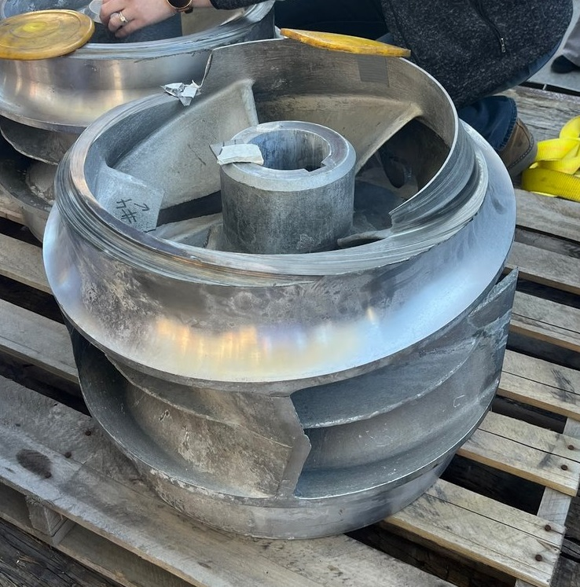
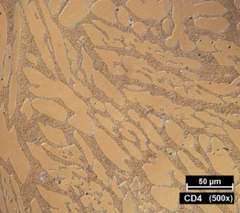
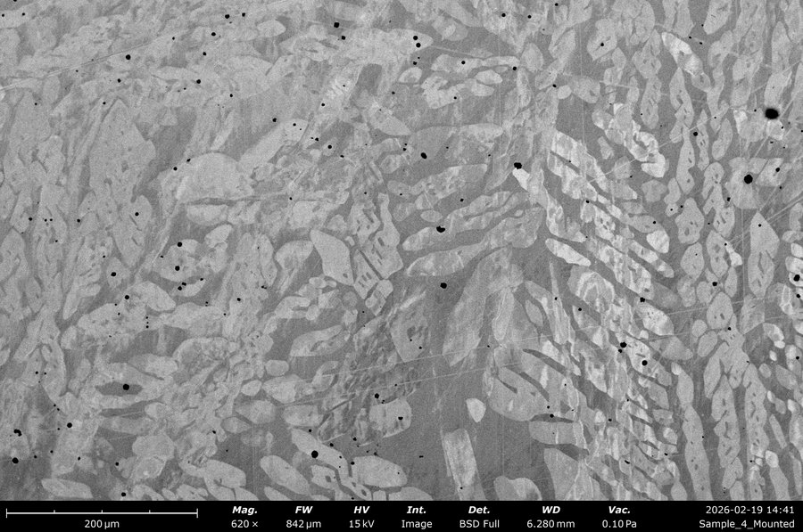
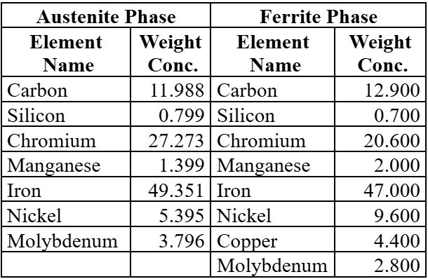
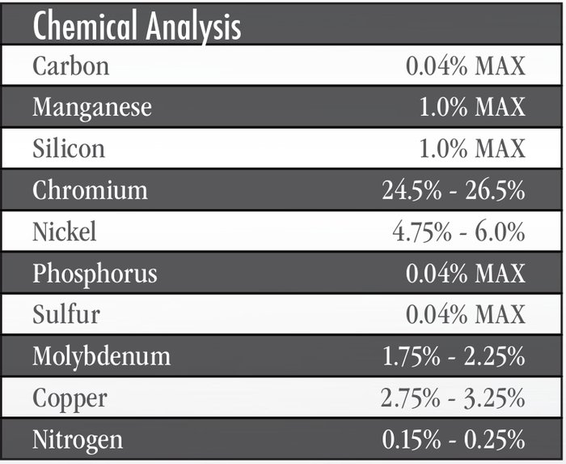

Duplex Stainless Steel Impeller Failure Analysis
A 7-person team investigation into the premature failure of a super duplex stainless steel submersible pump impeller, conducted for industry sponsor Townley Foundry & Machine.
Background
Submersible pump impellers are essential rotating components in phosphate mining operations, transporting corrosive and abrasive slurries critical to commercial agriculture. This impeller, made from a proprietary Townley super duplex stainless steel, was installed in a double suction vertical-submersed pump handling a 2 pH diluted phosphoric acid and water slurry at a North Carolina phosphate mine. Designed to withstand years of corrosive wear, the part failed after only one year in service.

Approach
The investigation moved from macroscopic inspection down to microstructural and chemical analysis. Three samples were pulled from different regions of the failed impeller, the outside wall, the interface where failure was fully ductile, and an inside fin. Optical microscopy first characterized the failure surfaces, revealing a mix of brittle and ductile fracture modes depending on location.
From there, scanning electron microscopy was used to examine grain structure and defect density at higher magnification, followed by Rockwell hardness testing, X-ray diffraction, and energy dispersive X-ray spectroscopy to rule competing hypotheses in or out, casting defects, corrosion, phase changes, and mechanical overload, systematically.
Key Findings
SEM imaging combined with ImageJ void analysis showed the failed sample carried substantially more porosity than Townley's reference material.


Hardness testing across the three sample locations showed the brittle-failure region (outside wall) at the highest average hardness, 245 HB, while the fully ductile interface region measured lowest at 212 HB, falling below the published range for the comparable CD4MCu alloy. EDS and XRD confirmed the alloy composition and phase balance matched expectations, ruling out chemical attack or improper heat treatment as contributing causes.


Root Cause & Recommendations
The team weighed two competing hypotheses: uneven mechanical loading from improper shaft alignment or maintenance, versus casting-induced porosity as the primary driver of failure. The concentration of surface defects, chevron marks indicating brittle crack initiation, and the short one year service life pointed toward hypothesis one as more credible, elevated, non-uniform stress from installation or operating conditions rather than a casting flaw acting alone.
Recommendations delivered to the sponsor included optimizing cooling rates and adding an argon-purge degassing step during casting to reduce porosity, implementing X-ray, CT, or ultrasonic inspection to catch internal defects before installation, and improving field installation practices, proper shaft alignment, secure mounting, and balance, to reduce cyclic stress on the component going forward.